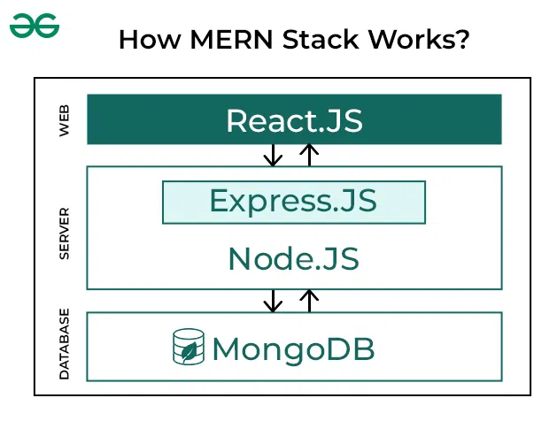

The Importance of Learning MERN Stack
The MERN stack is one of the most popular web development stacks used today for building full-stack web applications. It includes MongoDB, Express.js, React, and Node.js, making it fully JavaScript based. This allows developers to work efficiently on both frontend and backend using a single language.
Learning the MERN stack opens doors to modern development opportunities and helps in building powerful, scalable applications. It’s widely used by startups and large companies due to its flexibility and performance.
With strong community support and great tools, MERN continues to grow and evolve, making it an excellent choice for developers and students preparing for real-world projects.
